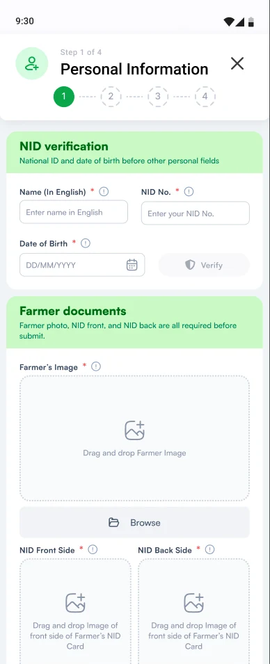
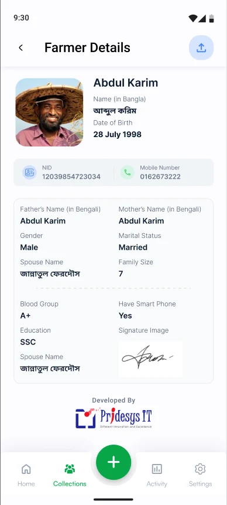
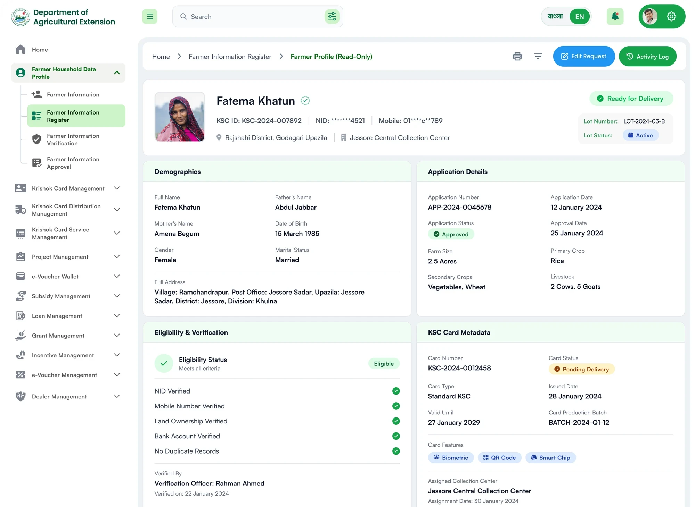
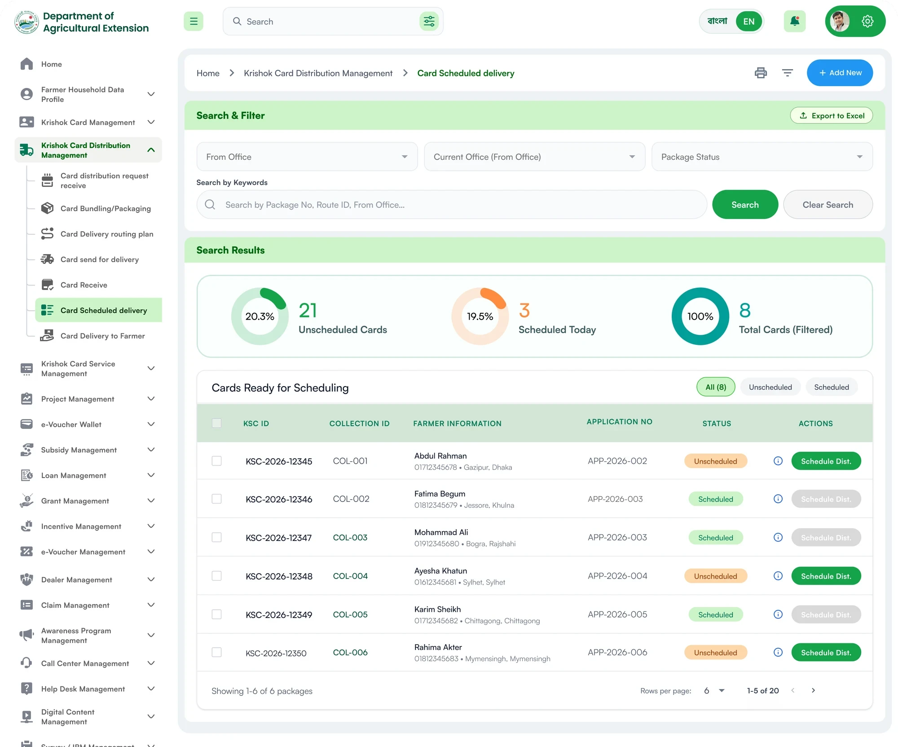
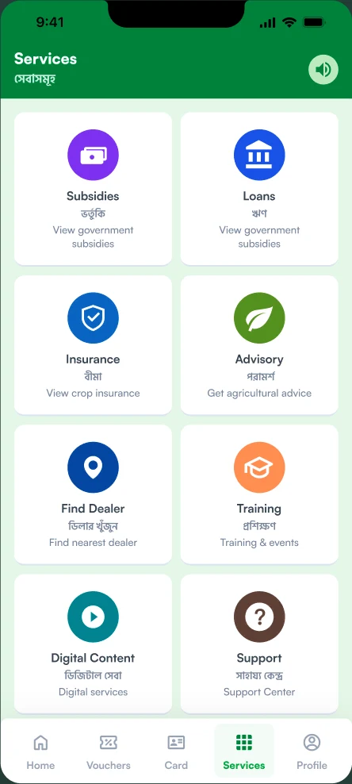
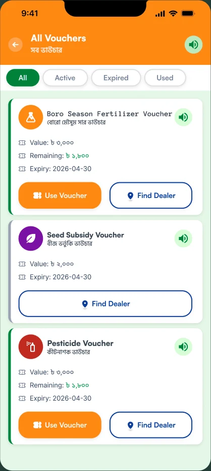
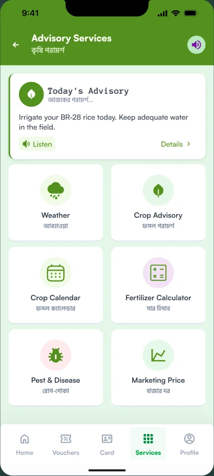

Case study
Farmers Card
A national digital ID for Bangladesh's farmers, built for the Ministry of Agriculture. We designed the four apps behind it: one for the field staff who register farmers, an admin portal for officials, one for farmers and one for dealers.
Bangladesh has about 16.9 million farming households. Getting support to that many farmers quickly and openly is hard with the old way of keeping records. The card puts every farmer on one checked digital record that support can be paid against.
 Pridesys IT
Pridesys IT- Design lead
- Sep 2025 to May 2026
- Launched April 2026
- farmerscard.gov.bd
- Field staff who register farmers
- Agriculture officials
- Farmers and input dealers
- Led the design of all four apps
- Worked between the ministry, officials and our team
- Four apps on one farmer record
- Registration, card hand-over and vouchers
- Bangla and English throughout

Usable without much reading
Many farmers, dealers and field staff have had little schooling. So the apps lean on pictures, colour and sound as much as on words.
- An icon and a colour for each serviceSubsidies, loans, insurance and the rest each have their own picture and colour, so a farmer can find them without reading the label.
- Bangla and English togetherFarmer app labels show both languages. The admin portal switches between them with one tap.
- Listen buttonsVouchers, notifications and the day's farming advice can be read aloud.
- Large text and high contrastFarmer app settings make text bigger, raise the contrast and read new notifications aloud.
- One step at a timeField staff register a farmer in four short steps. Each part says what it needs before they start.
- Status by colourIn the admin portal, coloured tags show whether a record is approved, waiting or scheduled.
The four apps
A farmer's record starts with a field visit, and the card gets used at a dealer's counter. Each app below handles one step.
1. Field staff register each household
Field staff register farmers on a phone, in four steps. The form checks the national ID and date of birth before anything else, then asks for the farmer's photo and both sides of the ID card. Each record keeps names in Bangla and English, the family, and whether the farmer has a smartphone.


2. Officials check the record and send out the card
The Department of Agricultural Extension runs the programme from the admin portal. Before a card is made, officials see whether the farmer's ID, mobile number, land and bank account are verified, and that the record is not a duplicate. The card then moves through bundling, a delivery route, the collection centre and a scheduled hand-over.


The portal also runs the programmes the card is used for. These are its main sections:
Farmers and cards
- Household profiles
- Card management
- Card distribution
- Card services
Money
- e-Voucher wallet
- e-Vouchers
- Subsidies
- Loans
- Grants
- Incentives
- Claims
Help and advice
- Advisory and e-extension
- Awareness programmes
- Digital content
- Call centre
- Help desk
- AI chat
- Surveys
People and offices
- Dealers
- Offices
- Officers
- Data collection agents
Running it
- Projects
- Farm inputs
- Analytics and reports
- Integrations
3. Farmers see their support and use it
Farmers see their balance and vouchers, find a dealer, and reach subsidies, loans, insurance, advice and training. Labels are in Bangla and English, and Listen buttons read the text aloud.



4. Dealers sell against the card
Dealers sell seed, fertiliser and feed to farmers who pay with the card or a voucher. A sale starts by scanning the farmer's QR code or tapping the card, and the summary shows the voucher taken off before the farmer pays.


Names, photos and figures in the screens are samples. The household count is from farmerscard.gov.bd.